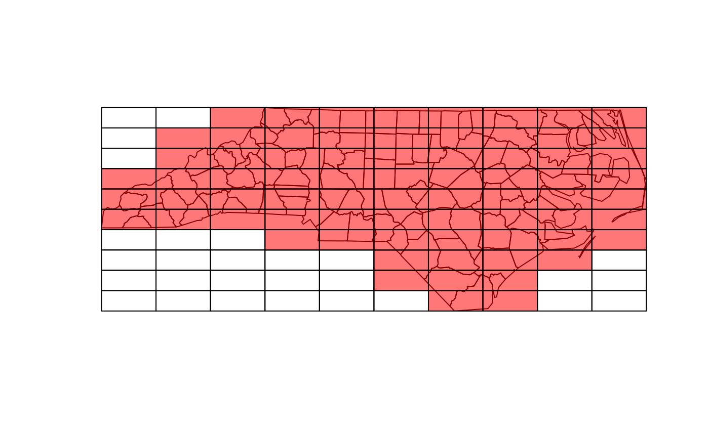
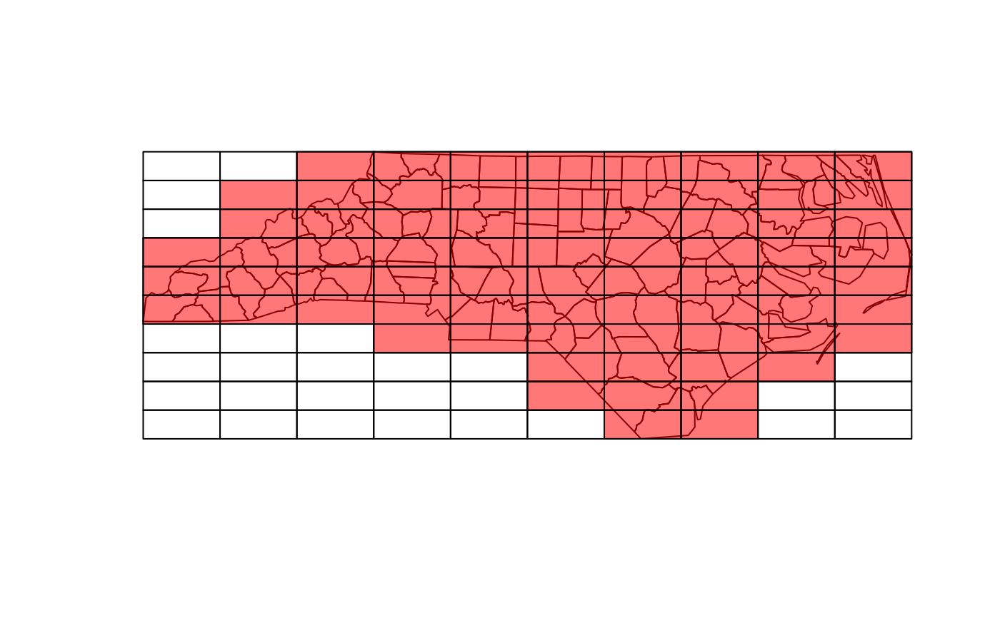

Create a regular tesselation over the bounding box of an sf or sfc object
Source:R/make_grid.R
st_make_grid.RdCreate a square or hexagonal grid covering the bounding box of the geometry of an sf or sfc object
Arguments
- x
- cellsize
numeric of length 1 or 2 with target cellsize: for square or rectangular cells the width and height, for hexagonal cells the distance between opposite edges (edge length is cellsize/sqrt(3)). A length units object can be passed, or an area unit object with area size of the square or hexagonal cell.
- offset
numeric of length 2; lower left corner coordinates (x, y) of the grid
- n
integer of length 1 or 2, number of grid cells in x and y direction (columns, rows)
- crs
object of class
crs; coordinate reference system of the target of the target grid in case argumentxis missing, ifxis not missing, its crs is inherited.- what
character; one of:
"polygons","corners", or"centers"- square
logical; if
FALSE, create hexagonal grid- flat_topped
logical; if
TRUEgenerate flat topped hexagons, else generate pointy topped
Value
Object of class sfc (simple feature geometry list column) with, depending on what and square,
square or hexagonal polygons, corner points of these polygons, or center points of these polygons.
Examples
plot(st_make_grid(what = "centers"), axes = TRUE)
plot(st_make_grid(what = "corners"), add = TRUE, col = 'green', pch=3)
 sfc = st_sfc(st_polygon(list(rbind(c(0,0), c(1,0), c(1,1), c(0,0)))))
plot(st_make_grid(sfc, cellsize = .1, square = FALSE))
plot(sfc, add = TRUE)
sfc = st_sfc(st_polygon(list(rbind(c(0,0), c(1,0), c(1,1), c(0,0)))))
plot(st_make_grid(sfc, cellsize = .1, square = FALSE))
plot(sfc, add = TRUE)
 # non-default offset:
plot(st_make_grid(sfc, cellsize = .1, square = FALSE, offset = c(0, .05 / (sqrt(3)/2))))
plot(sfc, add = TRUE)
# non-default offset:
plot(st_make_grid(sfc, cellsize = .1, square = FALSE, offset = c(0, .05 / (sqrt(3)/2))))
plot(sfc, add = TRUE)
 nc = st_read(system.file("shape/nc.shp", package="sf"))
#> Reading layer `nc' from data source
#> `/home/runner/work/_temp/Library/sf/shape/nc.shp' using driver `ESRI Shapefile'
#> Simple feature collection with 100 features and 14 fields
#> Geometry type: MULTIPOLYGON
#> Dimension: XY
#> Bounding box: xmin: -84.32385 ymin: 33.88199 xmax: -75.45698 ymax: 36.58965
#> Geodetic CRS: NAD27
g = st_make_grid(nc)
plot(g)
plot(st_geometry(nc), add = TRUE)
# g[nc] selects cells that intersect with nc:
plot(g[nc], col = '#ff000088', add = TRUE)

nc = st_read(system.file("shape/nc.shp", package="sf"))
#> Reading layer `nc' from data source
#> `/home/runner/work/_temp/Library/sf/shape/nc.shp' using driver `ESRI Shapefile'
#> Simple feature collection with 100 features and 14 fields
#> Geometry type: MULTIPOLYGON
#> Dimension: XY
#> Bounding box: xmin: -84.32385 ymin: 33.88199 xmax: -75.45698 ymax: 36.58965
#> Geodetic CRS: NAD27
g = st_make_grid(nc)
plot(g)
plot(st_geometry(nc), add = TRUE)
# g[nc] selects cells that intersect with nc:
plot(g[nc], col = '#ff000088', add = TRUE)
